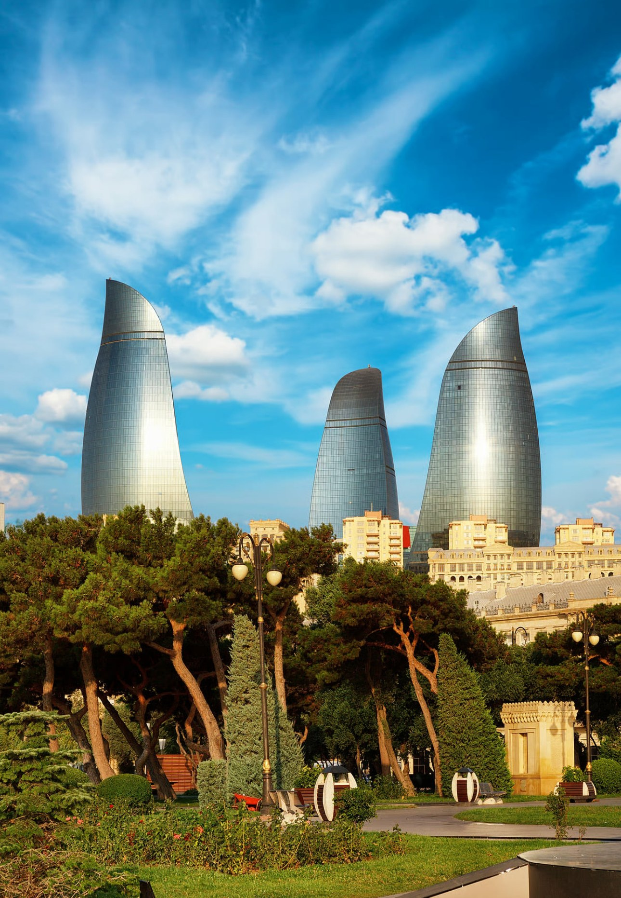
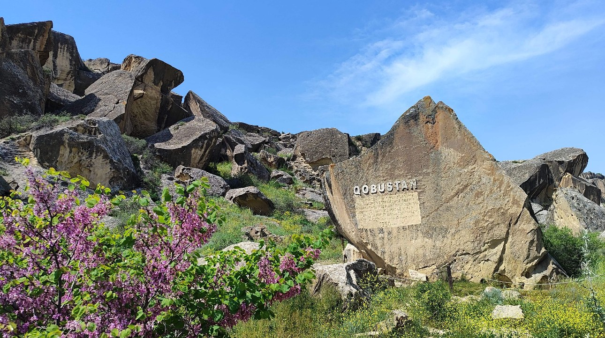
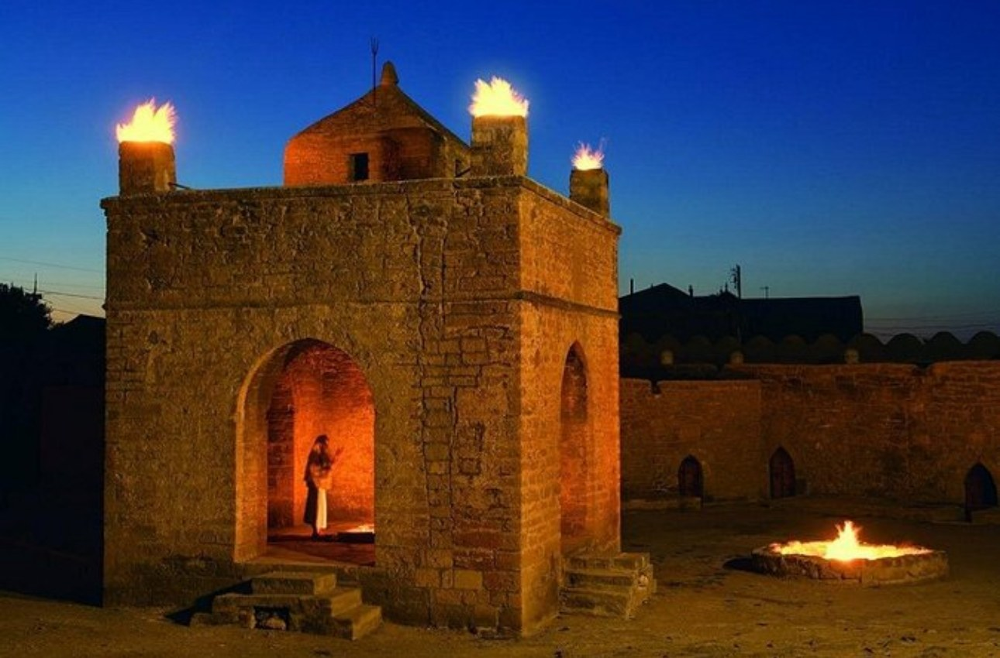

טיול מאורגן לאזרבייג׳ן 🇦🇿
באקו, גובוסטן, הגבעה הבוערת והכפר האדום
💰 המחיר — הכול כלול
כולל טיסות, מזוודה גדולה וטרולי, מלון ברמה גבוהה עם ארוחת בוקר וכל הסיורים לפי התוכנית — בלי תשלומים נוספים.
🛡️ ביטול כרטיסי הטיסה ללא עלות במקרה של מלחמה
✈️ הטיסות
תל אביב ← באקו · טיסה ישירה
באקו ← תל אביב · טיסה ישירה
🧳 כלול: מזוודה גדולה + טרולי · שעון באקו מקדים בשעתיים את שעון ישראל
🏨 המלון
4 לילות במלון ברמה גבוהה בבאקו, עם ארוחת בוקר בכל בוקר. שם המלון המלא נשלח מיד עם אישור יציאת הטיול.
🗺️ תוכנית הטיול
✈️ נחיתה בבאקו וסיור פנורמי
המראה ב־08:10 ונחיתה בבאקו ב־13:15. מיד עם ההגעה יוצאים לסיור פנורמי ראשון בעיר: חולפים על פני מגדלי הלהבה, המבנים המרשימים של גדולי האדריכלים בעולם, האצטדיון והאולמות שנבנו לאירוויזיון ולאולימפיאדה האירופית. אחר הצהריים מבקרים ב״יאשיל באזאר״, השוק הירוק והתוסס של באקו, ובערב יוצאים לסיור רגלי ברחוב ניזאמי המואר.
🔥 גובוסטן, מקדש האש והגבעה הבוערת
יוצאים לשמורת גובוסטן, אתר מורשת עולמית של אונסק״ו, ורואים ציורי סלע עתיקים שחלקם בני כ־10,000 שנה. ממשיכים לחצי האי אבשרון, ערש תעשיית הנפט, ומבקרים ב״מקדש מתפללי האש״ העתיק. מסיימים ביאנאר דאג, ״הגבעה הבוערת״, שבה האש בוערת תמיד על צלע ההר.


🏔️ גובה והכפר האדום
נוסעים לגובה, אזור ירוק של טבע הררי ואוויר צלול, ומבקרים בקרסניה סלובודה, ״הכפר האדום״, עיירה יהודית ייחודית של קהילת יהודי ההרים שחיה כאן מאז המאה ה־13. מבקרים בבית הכנסת (אם יתאפשר), בבית העלמין, בישיבה ובמקווה, וגם באנדרטת השואה האזרית.
🏛️ העיר העתיקה, מוזיאון השטיחים ומופע פולקלור
סיור בעיר העתיקה של באקו, איצ׳רי שהר, בין חומות, סמטאות ומבנים מהמאה ה־17, כולל מגדל העלמה וחאנים עתיקים. ממשיכים למוזיאון השטיחים של אזרבייג׳ן, לארמון השירוואנשאה ולמרכז היידר אלייב שתכננה האדריכלית זאהה חדיד. בערב: ארוחת ערב ומופע פולקלור במסעדה מקומית, עם מוזיקה וריקודים.
🛫 חזרה הביתה
אחרי ארוחת הבוקר נוסעים לשדה התעופה. המראה ב־14:15 ונחיתה בתל אביב ב־15:40.
התוכנית מתארת את האתרים שבהם מבקרים. סדר הביקורים עשוי להשתנות.
✨ מה כלול
- ✅ טיסות ישירות הלוך וחזור תל אביב – באקו
- ✅ מזוודה גדולה + טרולי
- ✅ 4 לילות במלון ברמה גבוהה עם ארוחת בוקר
- ✅ כל הסיורים והביקורים לפי תוכנית הטיול
- ✅ ארוחת ערב ומופע פולקלור
- ✅ ביטול כרטיסי הטיסה ללא עלות במקרה של מלחמה
- ✅ ליווי אישי שלנו מההזמנה ועד הנחיתה
📋 תנאי ביטול
- עד 30 ימי עבודה לפני היציאה: 20% דמי ביטול לאדם.
- מ־29 עד 14 ימי עבודה לפני היציאה: 50% דמי ביטול לאדם.
- מ־13 ימי עבודה ועד יום היציאה: 100% דמי ביטול לאדם.
- במקרה של מלחמה — ביטול כרטיסי הטיסה ללא עלות.
- הטיול מתקיים בכפוף למספר מינימלי של משתתפים. אם לא יתקיים, תוצע חלופה בתאריך אחר או החזר.
- הדרכון חייב להיות בתוקף לפחות חצי שנה אחרי תאריך החזרה.
ובינתיים, טיפ קטן מאיתנו 😉
המחירים משתנים כל הזמן, ומה שיש היום לא תמיד יהיה מחר.
שלחו לנו צילום דרכון ונשריין לכם את המקום כבר עכשיו, ככה המחיר הזה נשאר שלכם 🙌
יאללה, באקו מחכה לכם ✈️😄